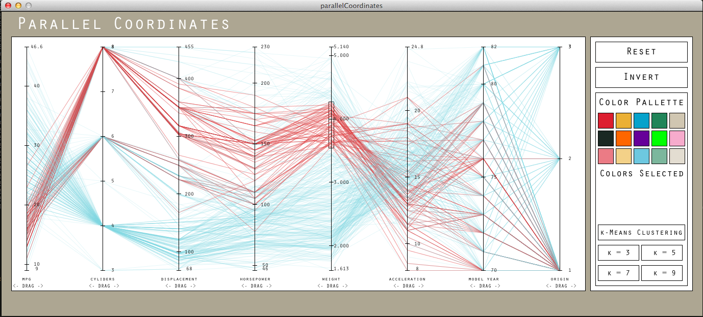

This was one of the more challenging parts of the assingment. I used sed and awk and some other scripting tricks to parse the cars.data.txt file from this helped me to get file into a .tsv and I used FloatTable to help me examine the date in the visualization. I have below the scipting commands that I used to help me parse the data.
#to get car names
cat cars.data.txt | sed 's/-"//g' | sed 's/"/,/g' | awk '{print $1, $2, $3, $4}' | head -n 421 | tail -n 405 | tee cars.csv
#to append cars.csv with other data
cat cars.data.txt | sed 's/-//g' | sed 's/ /, /g' | awk '{print $1}' | tail -n 407 | head -n 406 | tee -a cars.csv
#for $2 - $8
cat cars.data.txt | awk '{print $2 ", "}' | tail -n 407 | head -n 406 | tee -a cars.csv
#script for reordering this data
parsingCars.sh
#!/bin/bash
for i in {1..406}
do
cat ./cars.csv | awk "NR % 406 == $i"
done
#add last car
cat cars.csv | awk "NR % 406 == 0" | tee -a carsOut.csv
#put all the info about each car on one line
cat carsOut.csv | awk '{printf( $1 " " $2 " " $3 " " $4); if (NR % 8 ==0) {print("\n")} else {printf(" ")}}' | tee cars.csv
#put in the headers
sed -i -e '1icar name, mpg, cyliders, displacement, horsepower, weight, acceleration, model year, origin' cars.csv
#rename cars.csv so that the empty spaces can be taken out
mv cars.csv cars.true.csv
#take out empty spaces and rename to cars.csv
sed '/^\s*$/d' cars.true.csv | tee cars.csv
#to turn it into a .tsv
#I used this on both datasets
sed 's/, /\t/g' cars.csv | tee cars.tsv
When I set out to design my paper prototype I relied heavily on the examples given in the books from the website and the online examples. It seemed that everything that I wanted to include (the axes, the title, the labels on each axis, I was able to include). The paper prototype was extremely helpful and, as you can see, I used it extensively as a reference while I was coding up the static model (both of which are shown below). Sketching the static model was pretty fun. I used most of what I had learned on the time series assignment to make a really rough outline of what I thought I wanted. During the whole process I wanted to keep the interactivity in mind so that when I did move on to work on the interactive aspects of my sketch I didn't have to recode a bunch of things. So I used arrays to set the y-value of my axes so that they could easily be moved or dragged and I anchored my data points to the axes not a static y position. This way the static drawing was still static but more of a stepping stone than a finished product.

Dragging
With the dragging, the user just has to hover the mouse over the axis labels and pull the axis to the positions that they want it in. As they pull it along the other axes that it passes realign themselves and the visualization is restructured for the new order of the axes. Under the hood, the script had to keep track of not only the order of the axes but the original position of axes so that I could snap them into place. Also I needed to keep track of the distance between the x position of the the mouse when it was clicked and x position of the axis I was moving. I did this so that the axis wouldn't just snap to where my mouse was and the process would have a more organic feel to it. Keeping track of the original position of the axes naturally led to the inclusion of a reset button so that the user could quickly return to the original state of the visualization.
Brushing
To utilize the brushing (or filtering the data over several axes) interactivity the user simply has to put the cursor over the axis and drag down the axis. Any of the data that falls between the start of the users dragging and the end will be highlighted red and the rest will be colored in a light color so that they do not interfere with the user's ablility to see the data. I found that using red to highlight the data and using blue to mute the other data was the right choice because it provide a contrast that could give the user a context for which to view the selected data.
Inverting
Inverting the data was quite easy. I just switched the y positions values of the ends of each of the axes. The only part that proved to be dificult was working on the effect inverting had on all of interactivity and design aspects of the sketch. For example, I had to rearrange the way that each of tick marks on each of the axes was ordered so that they were still in the right order. Over all I think all of interactions that I put in this visualization work quite well. If I had more time I would love to have included a view of the raw data below the parallel coordinates view. So that when a section of an axis was selected by brushing the user could see the data. This is much like the view in the nutrient contents example.
For the clustering part of the assignment, I used the algorithm given on Wikipedia which consisted of an initialization step, where you are to define k d-dimensional mean vectors and then a two-step process of assigning observances to a cluster based on their proximity to the mean vector for each cluster and using these clusters to update the mean. The two-step process has not converged until the observations stop changing clusters. When I programmed the k-means clustering algorithm I used these steps. This is what I my clustering looks like. For each row of data I created a 9-d array and used the Euclidean 9-d Norm to find the distance from the cluster mean. For initializing the means I chose k observations and used them as my means this is commonly known as the Forgy Initialization Method. There are other ones but this one seemed like the easiest to implement. Given more time I would love to have implemented some sort of spline interpolation to bring the data lines to the means between the axes to make the clusters seem more dramatic. I have seen this in some papers but alas I ran out of time. However, I did implement a way to mute the other lines and just look at the means. This is toggled off and on by pressing the 6 key.

The second feature that I noticed was that all of the cars that weight the most were produced before 1975. Again this makes sense.
Another intersting thing to note is that cars made in each of the origins are spread pretty evenly throughout this sample. However cars from the United States seem to dominate in high horsepower and low gas mileage.
The last thing that I noticed about this dataset as I was working on my clustering is that there is a cluster of cars manufactured between 1980 anf 1982 that have low weight, low horsepower, and extremely high gas mileage.
For the Camera dataset, there seemed to be a trend in the late 1990's to 2000 to produce fewer cameras that are more high end and have better features (zoom, normal focus range, etc.).

Looking at more recent years you see that the production has considerably increased however so has the mediocrity of the features.
The final thing that I noticed is that all of the clusters no matter what the k seemed to be quite focused on the year that the camera was produced. The year was the most telling dimension as far as what cluster the camera was going to be in.